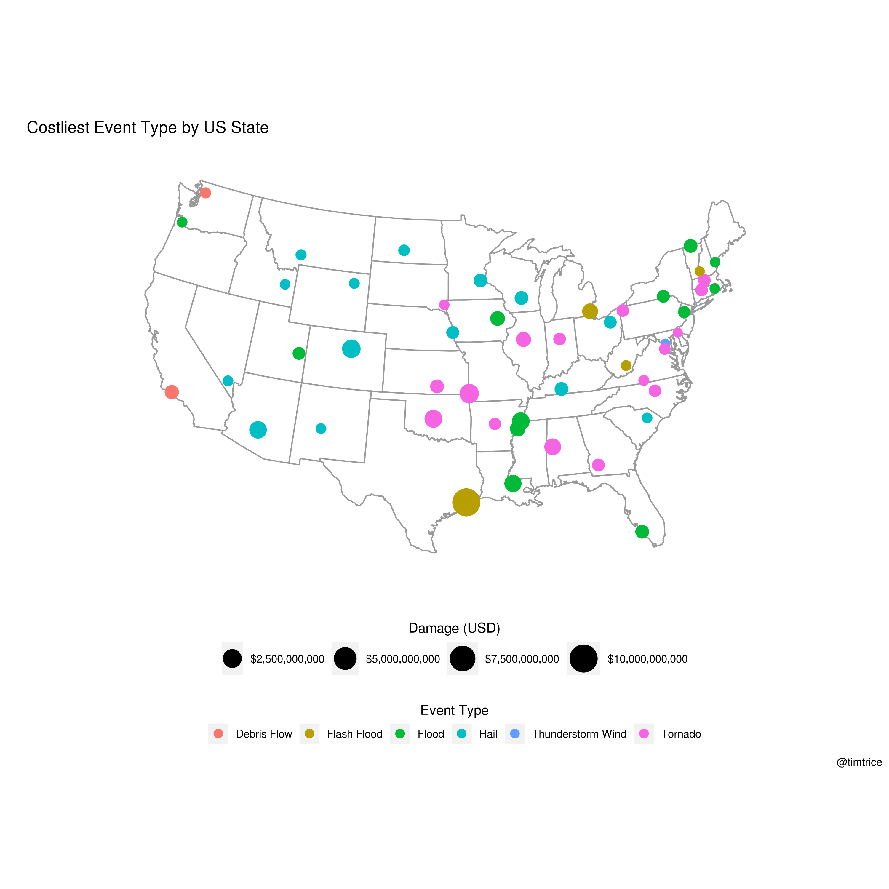

Costliest Events per U.S. State
Tim Trice
2019-07-06
Last updated: 2019-07-06
Checks: 6 1
Knit directory: ncdc_storm_events/
This reproducible R Markdown analysis was created with workflowr (version 1.4.0). The Checks tab describes the reproducibility checks that were applied when the results were created. The Past versions tab lists the development history.
Great! Since the R Markdown file has been committed to the Git repository, you know the exact version of the code that produced these results.
The global environment had objects present when the code in the R Markdown file was run. These objects can affect the analysis in your R Markdown file in unknown ways. For reproduciblity it’s best to always run the code in an empty environment. Use wflow_publish or wflow_build to ensure that the code is always run in an empty environment.
The following objects were defined in the global environment when these results were created:
| Name | Class | Size |
|---|---|---|
| data | environment | 56 bytes |
| env | environment | 56 bytes |
The command set.seed(20190704) was run prior to running the code in the R Markdown file. Setting a seed ensures that any results that rely on randomness, e.g. subsampling or permutations, are reproducible.
Great job! Recording the operating system, R version, and package versions is critical for reproducibility.
Nice! There were no cached chunks for this analysis, so you can be confident that you successfully produced the results during this run.
Great job! Using relative paths to the files within your workflowr project makes it easier to run your code on other machines.
Great! You are using Git for version control. Tracking code development and connecting the code version to the results is critical for reproducibility. The version displayed above was the version of the Git repository at the time these results were generated.
Note that you need to be careful to ensure that all relevant files for the analysis have been committed to Git prior to generating the results (you can use wflow_publish or wflow_git_commit). workflowr only checks the R Markdown file, but you know if there are other scripts or data files that it depends on. Below is the status of the Git repository when the results were generated:
Ignored files:
Ignored: output/
Unstaged changes:
Deleted: docs/.nojekyll
Note that any generated files, e.g. HTML, png, CSS, etc., are not included in this status report because it is ok for generated content to have uncommitted changes.
These are the previous versions of the R Markdown and HTML files. If you’ve configured a remote Git repository (see ?wflow_git_remote), click on the hyperlinks in the table below to view them.
| File | Version | Author | Date | Message |
|---|---|---|---|---|
| Rmd | b6e2325 | Tim Trice | 2019-07-06 | Add R pkg maps |
| Rmd | 695c174 | Tim Trice | 2019-07-06 | Pass NULL in chunk references |
| html | bc95c34 | Travis CI | 2019-07-05 | Rebuild website #72 [skip ci] |
| Rmd | d2e8bac | Tim Trice | 2019-07-05 | Update location of sqlite db |
| Rmd | ccac1c4 | Tim Trice | 2019-07-05 | Add Damage analysis |
Error in loadNamespace(name): there is no package called 'mapproj'
| STATE | EPISODE_NARRATIVE |
|---|---|
| TEXAS | Harvey made landfall as a category 4 hurricane near Rockport, Texas during the evening of August 25th. The storm then weakened to a tropical storm and slowed, looping back and tracking over SE Texas then back over the Gulf of Mexico making a second landfall along the Louisiana coast during the early morning hours of August 30th. Over that 5 day period over Southeast Texas TS Harvey produced catastrophic flooding with a large area of 30 to 60 inches of rain, 23 tornadoes, tropical storm force winds and a moderate storm surge near Matagorda Bay. In some of the heavier bands rain fell at a rate of over 5 inches per hour. This copious record amount of rain over a led to catastrophic flooding. Thousands of homes, businesses, and roads were flooded due to flash flooding and sheet flow from long duration intense rain. Main stem rivers and adjoining tributaries, creeks and bayous reached full capacity and came out of their banks and this also contributed to the massive flooding across southeastern Texas. |
| MISSOURI | A strong upper level trough across the central plains region and a strong upper level disturbance along with a frontal boundary in the area produced numerous severe storms with a few supercells across southeast Kansas. One cyclic supercell associated with the system produced a very large and deadly EF-5 tornado that hit the city of Joplin and then spawned two separate tornadoes that moved across southwestern Missouri. A separate tornadic supercell produced an EF-3 tornado that moved into McDonald County from Northeastern Oklahoma. ||Continuing thunderstorms lasted into May 23 as another line of thunderstorms moved across the region. This line of storms produced reports of large hail, damaging winds and a weak EF-0 tornado in south central Missouri. As the storms moved over the Joplin area, two police officers were struck by lightning while aiding in the post tornado efforts. One of the two officers later died of injuries from the lightning strike. |
| COLORADO | Severe thunderstorm broke out across Denver and the surrounding metro area and produced large damaging hail, strong winds, heavy rain and flash flooding. Large hail up to baseball size, caused extensive property damage to cars, homes and businesses across a large part of Denver and the western suburbs including Arvada, Lakewood and Wheat Ridge. According to the Rocky Mountain Insurance Agency Association, the storm was Colorado���s most expensive insured catastrophe, around $2.3 billion. It also ranked as the second costliest hailstorm in U.S. history. The group estimated more than 150,000 auto insurance claims and 50,000 homeowner insurance claims would be filed. Businesses and homes sustained holes in siding along with broken windows and torn screens. Severe thunderstorm producing large hail, strong winds and heavy rain impacted areas around Greeley as well. ||The high cost incurred from the storm was due to a number of factors including: the size of the hail, the densely populated area, the time of day, the escalating costs to repair high-tech cars, and more expensive homes. Colorado Mills Mall in Lakewood was severely damaged after hail busted skylights and caused flooding inside stores. The common areas and tenant spaces suffered substantial water damage. Extensive damage to electrical systems, mechanical systems, including HVAC and lighting, kept the mall closed until November 2017. In Lakewood, the loss in sales tax was projected to be about $350,000 per month, which was 3 to 4 percent of the city’s monthly budget. Prestige Imports in Lakewood which sells Audis and Porches, estimated 250 to 300 vehicles were impacted by the storm. Some of those vehicles were valued at nearly $200,000 each.||Significant damage was reported at Lutheran Medical Center after a hailstorm tore through Wheat Ridge. The hospital building and some of the medical office buildings sustained broken windows. The storm also hit the office of the Colorado Bureau of Investigation in Lakewood. The offices were flooded, several cubicles destroyed, and even some ceiling tiles fell off. The storm damage prompted school officials to close all thirteen Adams 12 Five Star schools in Commerce City and Beach Court Elementary school in Denver. Most of the schools in the Adams 12 Five Star District are at least 50 years old and sustained flood damage. Large hail damaged an apartment building near Regis University, shattered windows and punctured the siding on the west-facing side of the building. Severe thunderstorms also produced large hail across parts of Larimer, Lincoln and Weld Counties.||Hail and heavy rain clogged drains and caused flash flooding throughout Greeley. Up to three feet of water covered the roadway near U.S. 34 and U.S. 85. Flooding was reported throughout Greeley. The Greeley Fire Department received 30 calls of flooding. Firefighters helped several residents get out of garden level apartments that had flooded. Several other businesses and buildings suffered flood damage, including Greeley City Hall and an apartment complex in Evans. The Greeley Mall was extensively damaged when water poured into the mall from the roof and debris inundated the main floor. The Frontier Academy Elementary School was also flooded, with administrators canceling classes the following day to clean up the damage. Windsor-Severance Fire Protection District had multiple reports of lightning strikes, including one that hit near Windsor Middle School and set off the school’s fire alarms. |
| OKLAHOMA | A tornado outbreak occurred during the afternoon and evening hours of the 20th. Several tornadoes occurred from central Oklahoma down through south central Oklahoma near the Red River. The strongest tornado touched down near Newcastle and traveled through Moore and south Oklahoma City. This tornado caused catastrophic damage in these areas, with a maximum rating of EF-5. The tornado claimed 24 lives and caused billions of dollars in damage. In addition to the tornadoes, large hail and damaging winds cause damage in many areas. |
| TENNESSEE | Heavy rains continued to occur across the Mid-Mississippi Valley into the Ohio Valley during the beginning part of May. In addition, spring snow melt across the Dakotas and Minnesota continued to create higher than normal river levels on the Mississippi River. The combination of the snow melt and heavy rainfall produced record breaking flooding on the Mississippi River. Numerous roads were flooded and closed as a result. Homes and businesses were flooded in the area. Many farmers lost crops or were not able to plant due to flooded fields. |
─ Session info ──────────────────────────────────────────────────────────
setting value
version R version 3.6.0 (2017-01-27)
os Ubuntu 14.04.5 LTS
system x86_64, linux-gnu
ui X11
language (EN)
collate en_US.UTF-8
ctype en_US.UTF-8
tz UTC
date 2019-07-06
─ Packages ──────────────────────────────────────────────────────────────
package * version date lib source
assertthat 0.2.1 2019-03-21 [1] CRAN (R 3.6.0)
backports 1.1.4 2019-04-10 [1] CRAN (R 3.6.0)
bit 1.1-14 2018-05-29 [1] CRAN (R 3.6.0)
bit64 0.9-7 2017-05-08 [1] CRAN (R 3.6.0)
blob 1.1.1 2018-03-25 [1] CRAN (R 3.6.0)
cli 1.1.0 2019-03-19 [1] CRAN (R 3.6.0)
colorspace 1.4-1 2019-03-18 [1] CRAN (R 3.6.0)
crayon 1.3.4 2017-09-16 [1] CRAN (R 3.6.0)
DBI * 1.0.0 2018-05-02 [1] CRAN (R 3.6.0)
digest 0.6.20 2019-07-04 [1] CRAN (R 3.6.0)
dplyr * 0.8.3 2019-07-04 [1] CRAN (R 3.6.0)
evaluate 0.14 2019-05-28 [1] CRAN (R 3.6.0)
forcats * 0.4.0 2019-02-17 [1] CRAN (R 3.6.0)
fs 1.3.1 2019-05-06 [1] CRAN (R 3.6.0)
ggplot2 * 3.2.0 2019-06-16 [1] CRAN (R 3.6.0)
git2r 0.26.1 2019-06-29 [1] CRAN (R 3.6.0)
glue 1.3.1 2019-03-12 [1] CRAN (R 3.6.0)
gtable 0.3.0 2019-03-25 [1] CRAN (R 3.6.0)
here 0.1 2017-05-28 [1] CRAN (R 3.6.0)
highr 0.8 2019-03-20 [1] CRAN (R 3.6.0)
hms 0.4.2 2018-03-10 [1] CRAN (R 3.6.0)
htmltools 0.3.6 2017-04-28 [1] CRAN (R 3.6.0)
httr 1.4.0 2018-12-11 [1] CRAN (R 3.6.0)
kableExtra * 1.1.0 2019-03-16 [1] CRAN (R 3.6.0)
knitr * 1.23 2019-05-18 [1] CRAN (R 3.6.0)
lazyeval 0.2.2 2019-03-15 [1] CRAN (R 3.6.0)
magrittr 1.5 2014-11-22 [1] CRAN (R 3.6.0)
maps * 3.3.0 2018-04-03 [1] CRAN (R 3.6.0)
memoise 1.1.0 2017-04-21 [1] CRAN (R 3.6.0)
munsell 0.5.0 2018-06-12 [1] CRAN (R 3.6.0)
pillar 1.4.2 2019-06-29 [1] CRAN (R 3.6.0)
pkgconfig 2.0.2 2018-08-16 [1] CRAN (R 3.6.0)
purrr 0.3.2 2019-03-15 [1] CRAN (R 3.6.0)
R6 2.4.0 2019-02-14 [1] CRAN (R 3.6.0)
Rcpp 1.0.1 2019-03-17 [1] CRAN (R 3.6.0)
readr 1.3.1 2018-12-21 [1] CRAN (R 3.6.0)
rlang 0.4.0 2019-06-25 [1] CRAN (R 3.6.0)
rmarkdown 1.13 2019-05-22 [1] CRAN (R 3.6.0)
rprojroot 1.3-2 2018-01-03 [1] CRAN (R 3.6.0)
RSQLite * 2.1.1 2018-05-06 [1] CRAN (R 3.6.0)
rstudioapi 0.10 2019-03-19 [1] CRAN (R 3.6.0)
rvest 0.3.4 2019-05-15 [1] CRAN (R 3.6.0)
scales 1.0.0 2018-08-09 [1] CRAN (R 3.6.0)
sessioninfo 1.1.1 2018-11-05 [1] CRAN (R 3.6.0)
stringi 1.4.3 2019-03-12 [1] CRAN (R 3.6.0)
stringr 1.4.0 2019-02-10 [1] CRAN (R 3.6.0)
tibble 2.1.3 2019-06-06 [1] CRAN (R 3.6.0)
tidyselect 0.2.5 2018-10-11 [1] CRAN (R 3.6.0)
viridisLite 0.3.0 2018-02-01 [1] CRAN (R 3.6.0)
webshot 0.5.1 2018-09-28 [1] CRAN (R 3.6.0)
whisker 0.3-2 2013-04-28 [1] CRAN (R 3.6.0)
withr 2.1.2 2018-03-15 [1] CRAN (R 3.6.0)
workflowr 1.4.0 2019-06-08 [1] CRAN (R 3.6.0)
xfun 0.8 2019-06-25 [1] CRAN (R 3.6.0)
xml2 1.2.0 2018-01-24 [1] CRAN (R 3.6.0)
yaml 2.2.0 2018-07-25 [1] CRAN (R 3.6.0)
[1] /home/travis/R/Library
[2] /usr/local/lib/R/site-library
[3] /home/travis/R-bin/lib/R/library